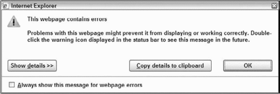

在IE7及更早版本中，如果错误发生在位于外部文件的脚本中，行号通常会与错误所在的行号差1。如果是嵌入在页面中的脚本发生错误，则行号就是错误所在的行号。
在IE7及更早版本中，如果错误发生在位于外部文件的脚本中，行号通常会与错误所在的行号差1。如果是嵌入在页面中的脚本发生错误，则行号就是错误所在的行号。
IE、Firefox、Safari、Chrome和Opera等主流浏览器，都具有某种向用户报告JavaScript错误的机制。默认情况下，所有浏览器都会隐藏此类信息，毕竟除了开发人员之外，很少有人关心这些内容。因此，在基于浏览器编写JavaScript脚本时，别忘了启用浏览器的JavaScript报告功能，以便及时收到错误通知。
IE是唯一一个在浏览器的界面窗体（chrome）中显示JavaScript错误信息的浏览器。在发生JavaScript错误时，浏览器左下角会出现一个黄色的图标，图标旁边则显示着"Error on page"（页面中有错误）。假如不是存心去看的话，你很可能不会注意这个图标。双击这个图标，就会看到一个包含错误消息的对话框，其中还包含诸如行号、字符数、错误代码及文件名（其实就是你在查看的页面的URL）等相关信息。图17-1展示了IE的错误消息对话框。
这些信息对于一般用户还算说得过去，但对Web开发来说就远远不够了。可以通过设置让错误对话框一发生错误就显示出来。为此，要打开“Tools”（工具）菜单中的“Internet Options”（Internet 选项）对话框，切换到“Advanced”（高级）选项卡，选中“Display a notification about every script error”（显示每个脚本错误的通知）复选框（参见图17-2）。单击“OK”（确定）按钮保存设置。

图 17-1
图 17-2
保存了设置之后，通常要双击黄色图标才会显示的对话框，就会变成一有错误发生随即自动显示出来。
另外，如果启用了脚本调试功能的话（默认是禁用的），那么在发生错误时，你不仅会显示错误通知，而且还会看到另一个对话框，询问是否想要调试错误（参见图17-3）。
图 17-3
要启用脚本调试功能，必须要在IE中安装某种脚本调试器。（IE8和IE9自带调试器。）本章后面会单独讨论调试器。
默认情况下，Firefox在JavaScript发生错误时不会通过浏览器界面给出提示。但它会在后台将错误记录到错误控制台中。单击“Tools”（工具）菜单中的“Error Console”（错误控制台）可以显示错误控制台（见图17-4）。你会发现，错误控制台中实际上还包含与JavaScript、CSS和HTML相关的警告和信息，可以通过筛选找到错误。
图 17-4
在发生JavaScript错误时，Firefox会将其记录为一个错误，包括错误消息、引发错误的URL和错误所在的行号等信息。单击文件名即可以只读方式打开发生错误的脚本，发生错误的代码行会突出显示。
目前，最流行的Firefox插件Firebug，已经成为开发人员必备的JavaScript纠错工具。这个可以从www.getfirebug.com下载到的插件，会在Firefox状态栏的右下角区域添加一个图标。默认情况下，右下角区域显示的是一个绿色对勾图标。在有JavaScript错误发生时，图标会变成红叉，同时旁边显示错误的数量。单击这个红叉会打开Firebug控制台，其中显示有错误消息、错误所在的代码行（不包含上下文）、错误所在的URL以及行号（参见图17-5）。
图 17-5
在Firebug中单击导致错误的代码行，将在一个新Firebug视图中打开整个脚本，该代码行在其中突出显示。
Windows和Mac OS平台的Safari在默认情况下都会隐藏全部JavaScript错误。为了访问到这些信息，必须启用“Develop”（开发）菜单。为此，需要单击“Edit”（编辑）菜单中的“Preferences”（偏好设置），然后在“Advanced”（高级）选项卡中，选中“Show develop menu in menubar”（在菜单栏中显示“开发”菜单）。启用此项设置之后，就会在Safari的菜单栏中看到一个“Develop”菜单（参见图17-6）。
图 17-6
“Develop”菜单中提供了一些与调试有关的选项，还有一些选项可以影响当前加载的页面。单击“Show Error Console”（显示错误控制台）选项，将会看到一组JavaScript及其他错误。控制台中显示着错误消息、错误的URL及错误的行号（参见图17-7）。
单击控制台中的错误消息，就可以打开导致错误的源代码。除了被输出到控制台之外，JavaScript错误不会影响Safari窗口的外观。
图 17-7
Opera在默认情况下也会隐藏JavaScript错误，所有错误都会被记录到错误控制台中。要打开错误控制台，需要单击“Tools”（工具）菜单，在“Advanced”（高级）子菜单项下面再单击“Error Console”（错误控制台）。与Firefox一样，Opera的错误控制台中也包含了除JavaScript错误之外的很多来源（如HTML、CSS、XML、XSLT等）的错误和警告信息。要分类查看不同来源的消息，可以使用左下角的下拉选择框（参见图17-8）。
错误消息中显示着导致错误的URL和错误所在的线程。有时候，还会有栈跟踪信息。除了错误控制台中显示的信息之外，没有其他途径可以获得更多信息。
也可以让Opera一发生错误就弹出错误控制台。为此，要在“Tools”（工具）菜单中单击“Preferences”（首选项），再单击“Advanced”（高级）选项卡，然后从左侧菜单中选择“Content”（内容）。单击“JavaScrip Options”（JavaScript 选项）按钮，显示选项对话框（如图17-9所示）。
在这个选项对话框中，选中“Open console on error”（出错时打开控制台），单击“OK”（确定）按钮。这样，每当发生JavaScript错误时，就会弹出错误控制台。另外，还可以针对特定的站点来作此设置，方法是单击“Tools”（工具）、“Quick Preferences”（快速参数）、“Edit Site Preferences”（编辑站点首选项），选择“Scripting”（脚本）选项卡，最后选中“Open console on error”（出错时打开控制台）。
| 图 17-8 | 图 17-9 |
与Safari和Opera一样，Chrome在默认情况下也会隐藏JavaScript错误。所有错误都将被记录到Web Inspector控制台中。要查看错误消息，必须打开Web Inspector。为此，要单击位于地址栏右侧的“Control this page”（控制当前页）按钮，选择“Developer”（开发人员）、“JavaScript console”（JavaScript 控制台），参见图17-10。
图 17-10
打开的Web Inspector中包含着有关页面的信息和JavaScript控制台。控制台中显示着错误消息、错误的URL和错误的行号（参见图17-11）。
图 17-11
单击JavaScript控制台中的错误，就可以定位到导致错误的源代码行。